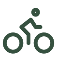

Le Sabot de Vénus
Le Sabot de Vénus
 Le Sabot de Vénus
Le Sabot de Vénus
Découvrez la richesse des paysages et des produits du parc naturel de La Chartreuse grâce à notre partenaire, l’agence Chartreuse Tourisme®.
DECOUVRIRNotre petit village de 1 000 habitants est lové au cœur de la montagne, à 900 m d'altitude, entre les sommets les plus emblématiques du massif. Sa situation géographique et ses commerces et services en font un lieu tout trouvé pour un séjour au plus près de la nature.
EN SAVOIR PLUSLe Tour de Chamechaude (2.082 m - point culminant du Massif de la Chartreuse) par Le Jardin est une belle randonnée qui rassemble tout ce qui fait le charme de ce massif (forêts, alpages, sangles, lapiaz, éboulis)
950m

moyen
9h
 Une balade pour toute la famille autour de ce superbe lac niché au pied des montagnes et au long du quel les spots de baignade en toute tranquillité ne manquent pas. D’autant que les bateaux à moteur y sont interdits. Alors on n’oublie pas les maillots !
24km
moyen
2h30
Bière IPA de caractère née d'un mélange de quatre malts et deux houblons, la Gouappe dite "pilier de bar", offre toutes les promesses d'une IPA Américaine avec les produits locaux de la Chartreuse
Cent trente plantes… Aujourd’hui encore c’est tout ce que l’on sait de la recette de la Chartreuse.Depuis plus de 250 ans, cette boisson à la couleur émeraude fascine.
Il règne beaucoup d’amour à la Ferme des Petites Cornes à St Pierre de Chartreuse et cela se ressent et se voit jusque dans leurs fromages. Pour preuve, ce succulent fromage de chèvre en forme de cœur et fleuri.
Pour en savoir plus sur le parc naturel rendez-vous sur le site de Destination Chartreuse
ACCEDER AU SITE